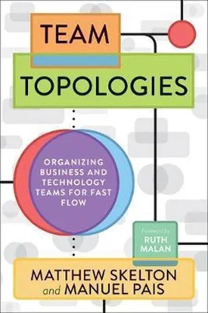
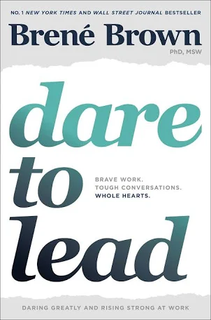
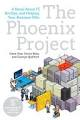
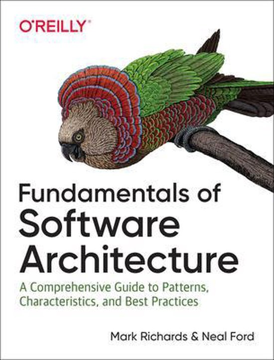
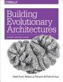
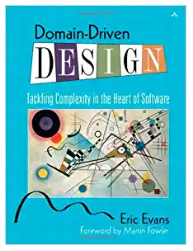
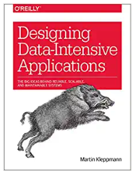
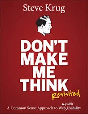

To Probe Further
Bookshelf
Image by Oli Götting from Pixabay
KEY POINTS:
- I provide an overview of the background work for you to probe further, linking several external resources inspiring my work.
- I grouped the resources in the following sections: Introductions, Soft Skills, Business & Strategy, and Hard Skills.
Introductions
| The Software Architect Elevator: Redefining the Architect's Role by Gregor Hohpe defines architects as people that can fill a void in large enterprises: they work and communicate closely with technical staff on projects but are also able to convey technical topics to upper management without losing the essence of the message. Conversely, they understand the company's business strategy and can translate it into technical decisions that support it. | ||
| SE Radio: On Architecture: for those interested in IT Architecture, I've created a curated Spotify playlist of Software Engineering Radio Episodes focusing on Architecture. | ||
| Software Architecture for Developers by Simon Brown is a practical, pragmatic and lightweight guide to software architecture, specifically aimed at software developers. |
website
|
|
| Software Architecture: The Hard Parts is structured as a narrative about a team breaking down a faulty outdated monolithic application into a modern microservices-based architecture. The authors compare different aspects of how a monolithic architecture might have been written to do something in the past, then how a modern microservice architecture could do the same thing today, offering advice and approaches for effective tradeoff analysis when refactoring a large monolith app. | ||
| Just Enough Software Architecture by George Fairbanks is an approachable and comprehensive book. | ||
| Software Systems Architecture by Nick and Eóin is a practitioner-oriented guide to designing and implementing effective architectures for information systems. |
Career Development
| Staff Engineer by Will Larson, defined technical leadership beyond the management track. I share many of the views presented in this book regarding development and skills of architects. |
reading notes
|
|
| The Staff Engineer's Path by Tanya Reilly. Similar to my view of architects the staff engineer's path allows engineers to contribute at a high level as role models, driving big projects, determining technical strategy, and raising everyone's skills. |
website
|
Soft Skills
|  | Team Topologies by Manuel Pais and Matthew Skelton describes four fundamental topologies (stream-aligned teams, enabling teams, complicated subsystem teams, and platform teams), and three fundamental interaction modes (collaboration, X-as-a-Service, and facilitation). |
reading notes
|
| The Culture Map: Decoding How People Think, Lead, and Get Things Done Across Cultures: provides a framework for handling intercultural differences in business and illustrates how different cultures perceive the world. Awareness of intercultural differences is crucial for the success of an architect in an international setting. It helps us understand these differences and, in doing so, improves our ability to react to specific behaviors that might have once seemed strange. | ||
| Nudge by Richard Thaler draws on research in psychology and behavioral economics to define libertarian paternalism as an active engineering of choice architecture. The book also popularised the concept of a nudge, a choice architecture that predictably alters people's behavior without restricting options or significantly changing their economic incentives. |
reading notes
|
|
| No Rules Rules by Erin Meyer and Reed Hastings provides insights into Netflix culture. When you give low-level employees access to information that is generally reserved for high-level executives, they get more done on their own. They work faster without stopping to ask for information and approval. They make better decisions without needing input from the top. |
reading notes
|
|
|  | Dare To Lead by Brené Brown, defines a leader as anyone who takes responsibility for finding the potential in people and processes and has the courage to develop that potential. |
website
reading notes
|
| The So What Strategy by Davina Stanley and Gerard Castles. Any architect has been caught at the end of a presentation when their audience, perhaps a leadership team or a Steering Committee, looks at them blankly and asks this most uncomfortable question: ‘So what?' How does that help? The book provides a pragmatic approach to answer that question in one single, powerful sentence. Or how to set yourself up so nobody asks it. |
website
tool
|
|
| Never Split the Difference by Chris Voss. Negotiations take place in many fields of life, such as business, and in some critical situations, like hostage situations (and architecture). The book is a guide on how to best behave when certain things happen, regardless of whether that includes the need for negotiation techniques in hostage situations or in business. |
summary
|
Business, Product, Strategy
| Six Simple Rules: How to Manage Complexity without Getting Complicated by Yves Morieux and Peter Tollman: the book emphasis that in today’s complicated business environment, you need to setup organisational structures based on cooperation. To deal with complexity, organizations should depend on the judgment of their people, which requires giving them more autonomy to act. It also depends on these people cooperating to utilize the organization's capabilities to cope with complex problems. | ||
| The Personal MBA 10th Anniversary Edition by Josh Kaufman provides an overview of the essentials of every major business topic: entrepreneurship, product development, marketing, sales, negotiation, accounting, finance, productivity, communication, psychology, leadership, systems design, analysis, and operations management. | ||
| Technology Strategy Patterns by Eben Hewitt provides a shared language—in the form of repeatable, practical patterns and templates—to produce great technology strategies. | ||
| Escaping the Build Trap by Melissa Perri is a practical guide to product management, product strategy, and ensuring product success. |
Organization and Processes
| Accelerate—acceleration is the second derivative of position (speed being the first), so if you want to move faster you need to accelerate. Sometimes, you need to jerk the system a bit, which in fact the proper term for the third derivative. | ||
|  | The Phoenix Project and The Unicorn Project by Gene Kim The Phoenix Project is a best-selling novel about DevOps. The book's characters reveal through their actions why it's so important for organizations to put security first and tear down the silos that have traditionally existed between development and operations teams. | |
| Continuous Delivery— through automation of the build, deployment, and testing process, and improved collaboration between developers, testers, and operations, delivery teams can get changes released in a matter of hours-sometimes even minutes-no matter what the size of a project or the complexity of its code base. |
Hard Skills
This section is heavily influenced by Gregor Hohpe’s article The Architect’s Path (Part 2 - Bookshelf)

|
ystem Design Interview (Volume 1 & 2) by Alex Xu. A "real-world" systems design books, not just for preparing for the systems design interview, but to strengthen your systems design muscle for the day-to-day architectural work. |
summary
|

|
Clean Code by Bob Martin. Good software starts with good code, and good code is clean. The basics of naming, functions that do one thing well, and formatting. |
summary
|

|
Refactoring: Improving the Design of Existing Code by Martin Fowler. Good software evolves, gains entropy, and is then restructured. Refactoring is a disciplined technique for restructuring an existing body of code, altering its internal structure without changing its external behavior. |
website
|
| Design Patterns by Gamma, Helm, Johnson, Vlissides. Design patterns help us make balanced decisions on the design of our code. |
summary
|
|
| Building Microservices (2nd Edition) by Sam Newman is a book about architectural trade-offs and considerations in distributed system design. Very accessible. | ||
|  | Fundamentals of Software Architecture by Neal and Mark, covers soft skills, modularity, component-based thinking, and architectural styles. |
website
|
| Enterprise Integration Patterns for anyone trying to connect systems without coupling them too tightly. |
website
|
|
| Pattern-Oriented Software Architecture: one of the most comprehensive references for distributed system design. | ||
|  | Building Evolutionary Architectures describes how to use fitness functions to guide architectural change over time. I thought the authors could have gotten a bit more our of this topic - perhaps we’ll see a second edition. | |
|  | Domain-Driven Design by Eric Evans promotes the idea that that to develop software for a complex domain, we need to build Ubiquitous Language that embeds domain terminology into the software systems that we build. DDD stresses defining models in software, and evolving them during the life of the software product. | |
| Release It! (2nd Edition) by Mike Nygard’s is about architecture design and decisions regarding stability and how to build "cynical" software. Besides the well known stability patterns like circuit breakers and bulkheads the book introduces foundational knowledge about running systems in production, from processes to network to security, also covering more process oriented questions like deployments or handling security. | ||
|  | Designing Data Intensive Systems by Martin Kleppmann is a mini-encyclopedia of modern data engineering. Not a practice or a cookbook for a particular Big Data, NoSQL or newSQL product, the book lays down the principles of current distributed big data systems. Covers replication, partitioning, linearizability, locking, write skew, phantoms, transactions, event logs, and much more. | |
| Thinking in Systems by Donella Meadows describes a system is more than the sum of its parts. It may exhibit adaptive, dynamic, goal-seeking, self-preserving, and sometimes evolutionary behavior. |
reading notes
|
|
|  | Don't make me think, revisited: a common sense approach to Web usability by Steve Krug provides a practical guide for understanding web usability and user experience. |
review
|